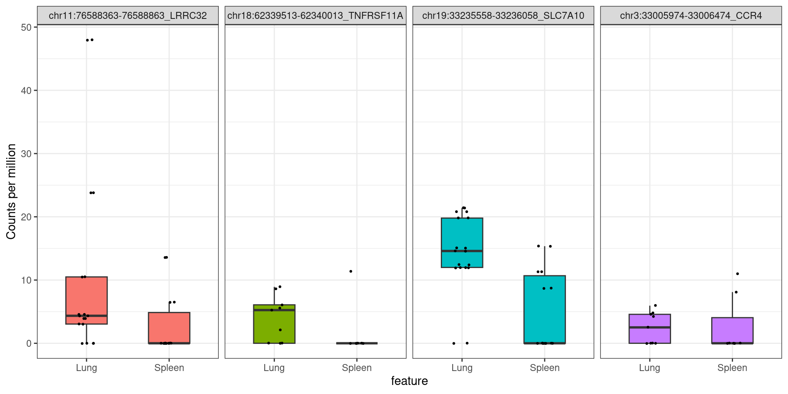
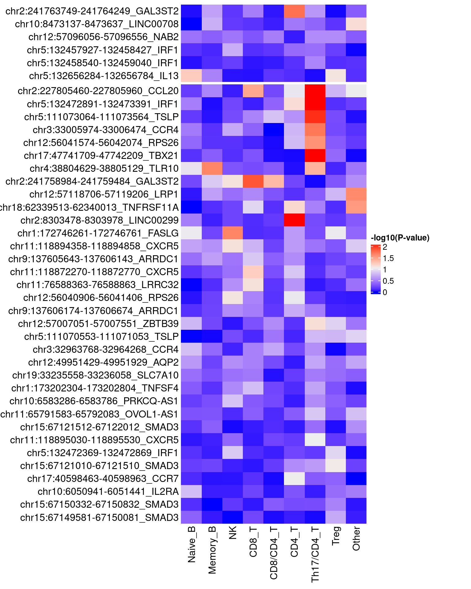

Linking asthma fine-mapped regions with lung immune OCRs
2025-03-27
Last updated: 2025-03-27
Checks: 7 0
Knit directory: lung_lymph_scMultiomics/
This reproducible R Markdown analysis was created with workflowr (version 1.7.1). The Checks tab describes the reproducibility checks that were applied when the results were created. The Past versions tab lists the development history.
Great! Since the R Markdown file has been committed to the Git repository, you know the exact version of the code that produced these results.
Great job! The global environment was empty. Objects defined in the global environment can affect the analysis in your R Markdown file in unknown ways. For reproduciblity it’s best to always run the code in an empty environment.
The command set.seed(20221229) was run prior to running
the code in the R Markdown file. Setting a seed ensures that any results
that rely on randomness, e.g. subsampling or permutations, are
reproducible.
Great job! Recording the operating system, R version, and package versions is critical for reproducibility.
Nice! There were no cached chunks for this analysis, so you can be confident that you successfully produced the results during this run.
Great job! Using relative paths to the files within your workflowr project makes it easier to run your code on other machines.
Great! You are using Git for version control. Tracking code development and connecting the code version to the results is critical for reproducibility.
The results in this page were generated with repository version d3ed9d1. See the Past versions tab to see a history of the changes made to the R Markdown and HTML files.
Note that you need to be careful to ensure that all relevant files for
the analysis have been committed to Git prior to generating the results
(you can use wflow_publish or
wflow_git_commit). workflowr only checks the R Markdown
file, but you know if there are other scripts or data files that it
depends on. Below is the status of the Git repository when the results
were generated:
Ignored files:
Ignored: analysis/.RData
Ignored: analysis/.Rhistory
Untracked files:
Untracked: ArchRLogs/
Untracked: Rplots.pdf
Untracked: analysis/.ipynb_checkpoints/
Untracked: analysis/ArchRLogs/
Untracked: analysis/GOBP_B_CELL_ACTIVATION_INVOLVED_IN_IMMUNE_RESPONSE.v2024.1.Hs.gmt
Untracked: analysis/Rplots.pdf
Untracked: analysis/cross_tissue_DE_u19_k10_fastTopics.Rmd
Untracked: analysis/differential_peak_analysis.Rmd
Untracked: analysis/full_atac_h2g_enrichment.Rmd
Untracked: analysis/identify_T_subsets.Rmd
Untracked: analysis/identify_batch_effects_full_atac_k8.Rmd
Untracked: analysis/linking_lung_celltype_OCRs_with_asthma_genetics_archive.Rmd
Untracked: analysis/run_fastTopics.R
Untracked: analysis/run_fastTopics_lungOnly.R
Untracked: analysis/test.pdf
Untracked: analysis/test_GO_enrichment.ipynb
Untracked: analysis/u19_atac_fastTopics.Rmd
Untracked: analysis/u19_full_atac_fastTopics.Rmd
Untracked: analysis/u19_full_atac_fastTopics_k10.Rmd
Untracked: analysis/u19_full_atac_fastTopics_k8.Rmd
Untracked: analysis/u19_lung_atac_fastTopics_no_correction.Rmd
Untracked: analysis/u19_regulon_enrichment.Rmd
Untracked: analysis/ukb-a-446.log
Untracked: analysis/ukb-a-446_GO_immune.log
Untracked: code/.ipynb_checkpoints/
Untracked: code/compute_pancreas_factors.R
Untracked: code/link_variant_to_function.R
Untracked: code/make_plots.R
Untracked: code/run_GO_enrichment.R
Untracked: code/run_fastTopics.R
Untracked: code/run_magma.sh
Untracked: code/run_magma/
Untracked: code/run_topic_DE_analysis.R
Untracked: data/CRE_0_asthma_fine-mapping_summary.RDS
Untracked: data/CRE_0_asthma_fine-mapping_summary.RData
Untracked: data/CRE_0_asthma_fine-mapping_summary.csv
Untracked: data/CRE_0_asthma_fine-mapping_summary.txt
Untracked: data/DA_peaks_Tsub_vs_others.RDS
Untracked: data/DA_peaks_by_cell_type.RDS
Untracked: data/TF_target_sizes_GRN.txt
Untracked: data/Tsuo2022_meta_analysis_asthma_risk_genes.csv
Untracked: data/U19_T_cell_peaks_metadata.RDS
Untracked: data/Wang_2020_T_cell_peaks_metadata.RDS
Untracked: data/annotated_scRNA_data.RDS
Untracked: data/lung_GRN_CD4_T_edges.txt
Untracked: data/lung_GRN_CD8_T_edges.txt
Untracked: data/lung_GRN_Th17_edges.txt
Untracked: data/lung_GRN_Treg_edges.txt
Untracked: output/annotation_reference.txt
Untracked: output/fastTopics
Untracked: output/homer
Untracked: output/ldsc_enrichment
Untracked: output/lung_Th17_dispersion_plot.pdf
Untracked: output/lung_immune_atac_peaks_high_ePIPs.RDS
Untracked: output/no_bkg/
Untracked: output/positions.bed
Untracked: output/topic3/
Untracked: output/u19_analysis
Untracked: output/u19_output
Untracked: test.pdf
Unstaged changes:
Modified: analysis/U19_motif_analysis.ipynb
Modified: analysis/cross_tissue_DE_u19_fastTopics.Rmd
Modified: analysis/gene_set_analysis_for_RNA_topics.Rmd
Modified: analysis/identify_batch_effects_full_atac.Rmd
Modified: analysis/identify_batch_effects_multiomics.Rmd
Modified: analysis/identify_regulatory_programs_u19_GRN.Rmd
Modified: analysis/linking_lung_celltype_OCRs_with_asthma_genetics.Rmd
Modified: analysis/rank_TFs_from_pairwise_comparison.ipynb
Deleted: analysis/test_magma.Rmd
Modified: analysis/u19_h2g_enrichment.Rmd
Modified: analysis/u19_lung_atac_fastTopics.Rmd
Deleted: code/run_fastTopic.R
Deleted: lung_immune_fine_mapping.Rproj
Note that any generated files, e.g. HTML, png, CSS, etc., are not included in this status report because it is ok for generated content to have uncommitted changes.
These are the previous versions of the repository in which changes were
made to the R Markdown
(analysis/variants_to_function_u19.Rmd) and HTML
(docs/variants_to_function_u19.html) files. If you’ve
configured a remote Git repository (see ?wflow_git_remote),
click on the hyperlinks in the table below to view the files as they
were in that past version.
| File | Version | Author | Date | Message |
|---|---|---|---|---|
| Rmd | d3ed9d1 | Jing Gu | 2025-03-27 | link variants to function |
Objective
For asthma fine-mapped regions, what cell types have open chromatin at these regions?
- Shared or cell-type specific?
- Present In lungs or spleens?
For the selected regions, what genes are differentially expressed for cell types with open chromatin?
Peak selections
What we have:
- asthma fine-mapped variants grouped by enhancers using multiple functional data
- normalized CA and GE matrix (Feature x cell)
- TMM and log-normalization (column-wise)
- scaled to zscore within each tissue (row-wise)
Approach One
- Overlapping with confident variants that contribute to asthma risk
enhancers
- confident enhancer sequences: ePIPs \(\ge\) 0.5
- peaks need to be within 250 bp from confidently fine-mapped variants (PIP \(\ge\) 0.3)
- average chromatin accessibility overlapping enhancers as negative controls
Approach Two (selected)
- Identify peaks near confidently fine-mapped variants
- peaks need to be within 250 bp from confidently fine-mapped variants (PIP \(\ge\) 0.3)
- average chromatin accessibility overlapping across a set of peaks as
negative controls
- 67 variants with PIP \(\ge 0.3\)
- 67 randomly chosen variants
Differential accessibility test
- Wilcoxon test with ArchR
- corrected for number of fragments and TSS enrichment
- pseudobulk level test
- Negative binomial tests with EdgeR
- corrected for batch effects (2 instead of 5 batches)
- Spurious p-values occur when overly correct for batch effects
Procedures
- Overlap our joint set of peaks with candidate enhancers
- Compute the distances from our peaks to variants contributing to ePIPs
- Filter out peaks not within 250 bp from any variant contributing to ePIPs
Result
Raw counts
Pearson correlation for peak counts for major cell types across samples
- Peaks from the same major cell type of both tissues cluster together
- Major cell types in COB-8 Spleen samples have low correlation with others
Directly overlapping peaks with fine-mapped variants
- 49 peaks within 250bp from 67 confidently fine-mapped SNPs
- confidently fine-mapped SNPs defined as PIP >= 0.3 for either aoa or coa
Comparing the peaks selected with two approaches:
A: peaks near confidently fine-mapped SNPs that fall in asthma putitative enhancer sequences
B: directly overlap peaks with confidently fine-mapped SNPs
Approach B was selected as it includes more peaks and filter out some peaks annotated as long intergenic non-coding RNAs.
Examining chromatin accessibility for asthma fine-mapped regions
Heatmaps for accessibiltiy across cell types
Legends - Top: AOA - Bottom: COA - average accessibility across peaks near equal number of confidently fine-mapped SNPs and random SNPs - Y-axis: peak coordinates in hg38, nearest gene - Chromatin accessibility normalized within each tissue
We see different patterns of open chromatin across immune subsets:
- shared across B cells only: LRP1, CXCR5
- shared across NK and CD8+ T: TBX21, GAL3ST2, IRF1
- shared across B, NK and CD8+ T
- shared across CD4+T subsets: CCL20, CCR4
- unique to CD4+T subset: TNFRSF11A
Heatmaps for accessibiltiy across cell types in case and control
Legends - Top: AOA - Bottom: COA - average accessibility across peaks near equal number of confidently fine-mapped SNPs and random SNPs - Y-axis: peak coordinates in hg38, nearest gene - Chromatin accessibility normalized within each tissue
Overall, chromatin levels in control are more open than those in case. Majoriy of CD4 subsets have lower chromatin accessibility in case samples. B, NK and CD8 T cells have more regions with open chromatin in case samples.
Validate cell-type specific OCRs near asthma risk enhancers
Do their nearby genes show differential expression?
Heatmap for the expression of cell-type specific genes
The scaling of gene expression was performed separately for each tissue, which agrees with the differential GE analyses done for lungs only. As a result, we see consistency in the differential expression and the heatmap of normalized expression.
Warning: The input is a data frame-like object, convert it to a matrix.Overlapping DE genes across cell types with the nearest genes from cell-type specific OCRs
Cell-type specific OCRs are defined as those have higher accessibility in CD4 T subsets.
Test peak to gene association across cells
Do RNA counts show over-dispersion
- 40 peaks are nearby SNPs with high PIPs
- identified 480 genes within 500KB of each selected peaks

integer(0)Check distribution for the selected peaks
Peak levels in CPMs show overdispersion across cell types.
Differential accessibility test between lung and spleen
wilcoxon test with ArchR
Cross-tissue DA tests on peaks within asthma fine-mapped regions show three peaks pass the threshold under FDR = 0.1.
DataFrame with 3 rows and 7 columns
seqnames idx start end Log2FC FDR MeanDiff
<Rle> <array> <array> <array> <numeric> <numeric> <numeric>
17751 chr1 17751 172746261 172746761 0.767918 0.0610773 0.0664645
183779 chr4 6672 121696793 121697293 0.575187 0.0506949 0.0909610
183803 chr4 6696 121951558 121952058 2.366109 0.0974141 0.0833075Negative Binomial test with EdgeR
Examining specific examples
$Memory_BWarning: The following aesthetics were dropped during statistical transformation: label.
ℹ This can happen when ggplot fails to infer the correct grouping structure in
the data.
ℹ Did you forget to specify a `group` aesthetic or to convert a numerical
variable into a factor?
The following aesthetics were dropped during statistical transformation: label.
ℹ This can happen when ggplot fails to infer the correct grouping structure in
the data.
ℹ Did you forget to specify a `group` aesthetic or to convert a numerical
variable into a factor?
The following aesthetics were dropped during statistical transformation: label.
ℹ This can happen when ggplot fails to infer the correct grouping structure in
the data.
ℹ Did you forget to specify a `group` aesthetic or to convert a numerical
variable into a factor?
$Naive_BWarning: The following aesthetics were dropped during statistical transformation: label.
ℹ This can happen when ggplot fails to infer the correct grouping structure in
the data.
ℹ Did you forget to specify a `group` aesthetic or to convert a numerical
variable into a factor?
$CD8.CD4_TWarning: The following aesthetics were dropped during statistical transformation: label.
ℹ This can happen when ggplot fails to infer the correct grouping structure in
the data.
ℹ Did you forget to specify a `group` aesthetic or to convert a numerical
variable into a factor?Two examples of peaks in Treg 
logFC logCPM LR PValue
214930 -0.75579284 3.289744 0.689471943 0.40634405
223473 -1.08669249 4.285742 2.894344486 0.08889093
148373 -0.88022832 3.601859 1.427689983 0.23214180
46817 -0.06925518 3.052186 0.005844166 0.93906336Differential accessibility test between case and control
wilcoxon test with ArchR
Cross-status DA tests on peaks within asthma fine-mapped regions show none of the peaks pass thresholds under FDR control.

Show examples of peaks passing threshold
# A tibble: 3 × 4
Peak CellType pval adjP
<chr> <chr> <dbl> <dbl>
1 chr2:227805460-227805960_CCL20 Th17.CD4_T 0.00299 0.372
2 chr5:132472891-132473391_IRF1 Th17.CD4_T 0.00310 0.372
3 chr17:47741709-47742209_TBX21 Th17.CD4_T 0.000694 0.250$Th17.CD4_T
R version 4.2.0 (2022-04-22)
Platform: x86_64-pc-linux-gnu (64-bit)
Running under: CentOS Linux 7 (Core)
Matrix products: default
BLAS/LAPACK: /software/openblas-0.3.13-el7-x86_64/lib/libopenblas_haswellp-r0.3.13.so
locale:
[1] LC_CTYPE=en_US.UTF-8 LC_NUMERIC=C LC_TIME=C
[4] LC_COLLATE=C LC_MONETARY=C LC_MESSAGES=C
[7] LC_PAPER=C LC_NAME=C LC_ADDRESS=C
[10] LC_TELEPHONE=C LC_MEASUREMENT=C LC_IDENTIFICATION=C
attached base packages:
[1] stats4 grid stats graphics grDevices utils datasets
[8] methods base
other attached packages:
[1] mapgen_0.5.9 org.Hs.eg.db_3.16.0
[3] GenomicInteractions_1.32.0 InteractionSet_1.26.1
[5] Gviz_1.42.1 GenomicFeatures_1.50.4
[7] AnnotationDbi_1.60.2 circlize_0.4.15
[9] TidyDensity_1.5.0 eulerr_7.0.2
[11] ComplexHeatmap_2.14.0 BSgenome.Hsapiens.UCSC.hg38_1.4.5
[13] BSgenome_1.66.3 Biostrings_2.66.0
[15] XVector_0.38.0 ggrepel_0.9.6
[17] edgeR_3.40.2 limma_3.58.0
[19] scales_1.3.0 colorRamp2_0.1.0
[21] rtracklayer_1.58.0 tidyr_1.3.1
[23] dplyr_1.1.4 rhdf5_2.42.1
[25] SummarizedExperiment_1.28.0 Biobase_2.58.0
[27] MatrixGenerics_1.10.0 Rcpp_1.0.14
[29] Matrix_1.6-5 GenomicRanges_1.50.2
[31] GenomeInfoDb_1.34.9 IRanges_2.32.0
[33] S4Vectors_0.36.2 BiocGenerics_0.44.0
[35] matrixStats_1.5.0 data.table_1.17.0
[37] stringr_1.5.1 plyr_1.8.9
[39] magrittr_2.0.3 ggplot2_3.5.1
[41] gtable_0.3.6 gtools_3.9.5
[43] gridExtra_2.3 ArchR_1.0.2
[45] workflowr_1.7.1
loaded via a namespace (and not attached):
[1] utf8_1.2.4 tidyselect_1.2.1 RSQLite_2.3.9
[4] htmlwidgets_1.6.4 BiocParallel_1.32.6 munsell_0.5.1
[7] codetools_0.2-20 interp_1.1-6 statmod_1.5.0
[10] DT_0.33 withr_3.0.2 colorspace_2.1-1
[13] filelock_1.0.3 knitr_1.50 rstudioapi_0.17.1
[16] labeling_0.4.3 git2r_0.33.0 GenomeInfoDbData_1.2.9
[19] polyclip_1.10-7 bit64_4.0.5 farver_2.1.2
[22] rprojroot_2.0.4 vctrs_0.6.5 generics_0.1.3
[25] xfun_0.51 biovizBase_1.46.0 BiocFileCache_2.6.1
[28] R6_2.6.1 doParallel_1.0.17 clue_0.3-66
[31] locfit_1.5-9.12 AnnotationFilter_1.22.0 bitops_1.0-9
[34] rhdf5filters_1.10.1 cachem_1.1.0 DelayedArray_0.24.0
[37] promises_1.3.2 BiocIO_1.8.0 nnet_7.3-20
[40] Cairo_1.6-2 processx_3.8.6 ensembldb_2.22.0
[43] rlang_1.1.5 GlobalOptions_0.1.2 lazyeval_0.2.2
[46] dichromat_2.0-0.1 checkmate_2.3.2 yaml_2.3.10
[49] crosstalk_1.2.1 backports_1.4.1 httpuv_1.6.15
[52] Hmisc_5.2-3 tools_4.2.0 jquerylib_0.1.4
[55] RColorBrewer_1.1-3 base64enc_0.1-3 progress_1.2.3
[58] zlibbioc_1.44.0 purrr_1.0.4 RCurl_1.98-1.17
[61] ps_1.9.0 prettyunits_1.2.0 rpart_4.1.24
[64] deldir_2.0-4 GetoptLong_1.0.5 cluster_2.1.8.1
[67] fs_1.6.5 whisker_0.4.1 ProtGenerics_1.34.0
[70] hms_1.1.3 evaluate_1.0.3 XML_3.99-0.18
[73] jpeg_0.1-11 shape_1.4.6 compiler_4.2.0
[76] biomaRt_2.54.1 tibble_3.2.1 crayon_1.5.3
[79] htmltools_0.5.8.1 later_1.4.1 Formula_1.2-5
[82] DBI_1.2.3 dbplyr_2.5.0 rappdirs_0.3.3
[85] cli_3.6.4 parallel_4.2.0 igraph_2.1.4
[88] pkgconfig_2.0.3 getPass_0.2-2 GenomicAlignments_1.34.1
[91] foreign_0.8-88 xml2_1.3.8 foreach_1.5.2
[94] bslib_0.9.0 VariantAnnotation_1.44.1 callr_3.7.3
[97] digest_0.6.37 rmarkdown_2.29 polylabelr_0.3.0
[100] htmlTable_2.4.3 restfulr_0.0.15 curl_6.2.1
[103] Rsamtools_2.14.0 rjson_0.2.23 lifecycle_1.0.4
[106] jsonlite_1.9.1 Rhdf5lib_1.20.0 pillar_1.10.1
[109] lattice_0.22-6 KEGGREST_1.38.0 fastmap_1.2.0
[112] httr_1.4.7 glue_1.8.0 png_0.1-8
[115] iterators_1.0.14 bit_4.6.0 stringi_1.8.4
[118] sass_0.4.9 blob_1.2.4 latticeExtra_0.6-30
[121] memoise_2.0.1 tidyverse_2.0.0